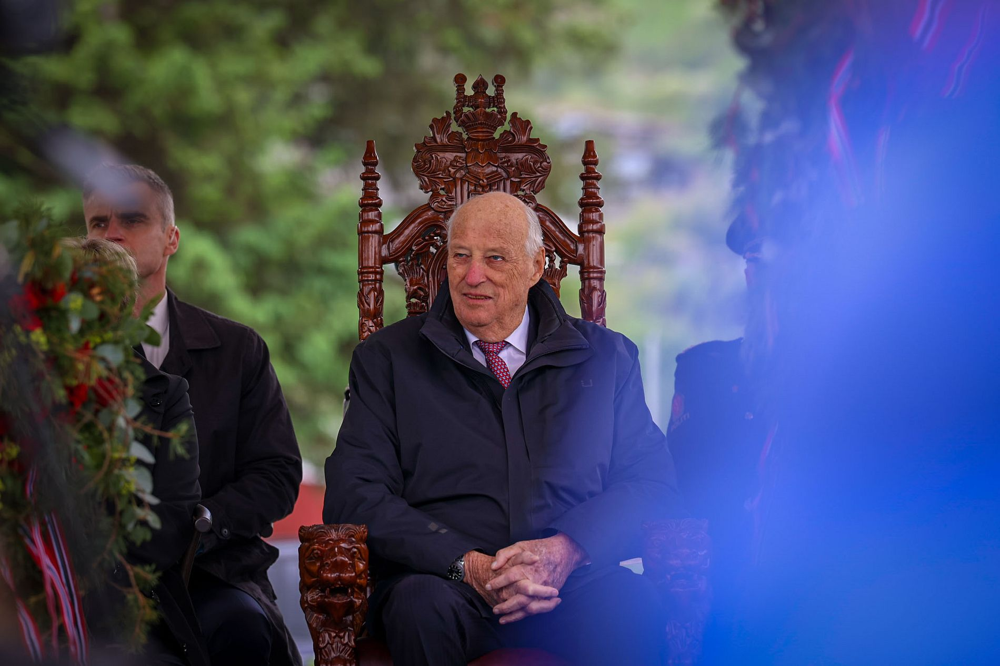

Kong Harald besøker Vestland
For to år siden ba jeg kongen gå av. Det var like greit at han ikke hørte på meg.
Marie Misund Bringslid, Bergens Tidende

Flaggene vaiet, og tårene trillet da kongen besøkte Etne. Kanskje er det siste gang han besøker Vestland.
Etne har kanskje ventet i 900 år på kongebesøk. Men det var ingen sure miner på kaien da kongen endelig steg i land. Bare litt sur vind.
Det var bunadregnjakke · rain jacket · ON regn (rain) + French jaque (jacket) og rullator.
Barnehagebarn i kappe og krone, et nikk til barnekongen Magnus Erlingsson fra Etne, som bare var fem år da han ble kronet til konge i Bergen i 1163.
For to år siden ba jeg kongen gå av. Det var kanskje like greit at han ikke hørte på meg.
Selv om skandalene har stått i kø for kongefamilien, har kongen sørget for stabilitet.
Mens støtten til monarkiet og flere av medlemmene i kongefamilien har falt til et rekordlavt nivå, er kongen fortsatt superpopulær.
Når han kommer på besøk til Vestland, kanskje for siste gang, er det ingen som snakker om skandale. Flaggene vaier og tårene triller. Det ropes tre ganger hurra or German hurra, a battle cry.
Langs veien står folk i finstasen og vinker når han kjører forbi.
«Kjempestort og kjempestas», slår ordføreren fast.
Etne ligger helt i ytterkanten av Vestland. Det er en av de siste kommunene kongen har på listen før han har besøkt alle kommunene i Norge.
De neste dagene står Samnanger, Vaksdal og Askvoll for tur før han har rundet from Latin rotundus (round) fylket.
Kongen går ikke lenger så mange skritt. Når han hører Etnekoret from Latin chorus synge utenfor Stødle kyrkjemedbrakt · brought-along · med (with, ON meðr) + brakt (brought, ON bragð) kongestol.
Kanskje er nettopp krykkestolen kongens moderne trone. I nyttårstalen beskrev kongen reisene rundt i landet som en «vitamininnsprøytning» og en «effektiv kur mot mismot».
Og det er virkelig imponerende at en konge som har begynt på sitt 90-ende år fortsatt har energi til å besøke hver krik og krok i landet.
Jeg trodde 2023 var «annus horribilis» for det norske kongehuset, men det skulle bare bli verre. Etter det fortsatte kritikken mot Märtha Louise sin kommersialisering av prinsessetittelen.
Det er fortsatt vanskelig å se for seg hvordan kongehuset skal legge bak seg alle de vanskelige sakene. 15. juni kommer dommen mot Marius Borg Høiby. Mest sannsynlig blir det også ankesak.
Dronning Sonja måtte stå over fylkesturen til Vestland på grunn av hjertesvik og hjerteflimmer.
Likevel er det ikke til å komme unna at kronprins Haakon gjør stadig mer av jobben. Mens kongen reiser rundt og sjekker av de siste kommunene i Vestland, er det han som deler ut Abelprisen og åpner Festspillene i Bergen.
– Vi må bare gjøre det beste ut av situasjonen som er, sa kronprinsen til pressen tirsdag om helsen til Mette-Marit og dronning Sonja.
Business as usualkrevende · demanding · ON krefja (to demand) + -ende tider.